El projecte
Un espai educatiu per ajudar i acompanyar el tractament de la mort i el dol a l’escola.
Saudade, del portuguès, descriu l’essència del dol: és el sentiment de trobar a faltar algú, barrejant la tristesa de l’absència amb l’amor i la felicitat d’haver compartit moments amb aquella persona. Aquest és un espai pensat per oferir recursos, orientacions i propostes didàctiques per parlar de la mort i el dol amb infants. L’objectiu és visibilitzar aquest tema dins l’àmbit educatiu d’una manera respectuosa, propera i adaptada a cada etapa.
Què hi trobaràs?
S’organitza en diferents tipus de recursos per facilitar-ne l’ús a l’aula.
Contes
Àlbums il·lustrats i llibres per iniciar converses sobre la mort, l’absència i el record.
Activitats
Propostes senzilles per treballar les emocions, el dol i l’acompanyament a través del joc, l’art i la paraula.
Orientacions
Idees i recomanacions per abordar el tema amb sensibilitat segons l’edat dels infants.
Recursos per etapa
Tria l’etapa educativa per accedir als recursos específics.
Infantil
Recursos per treballar la mort i el dol des de l’oralitat, el conte, el joc simbòlic i l’expressió emocional.
Veure recursos d’InfantilPrimària
Materials per reflexionar sobre la pèrdua, els records, les emocions i les maneres d’acompanyar els altres.
Veure recursos de PrimàriaRecursos d’Infantil
Apartats per treballar la mort i el dol amb infants d’Educació Infantil.
Contes i àlbums il·lustrats
Hi trobaràs un recull d’àlbums il·lustrats per poder treballar la mort i el dol amb els més menuts.
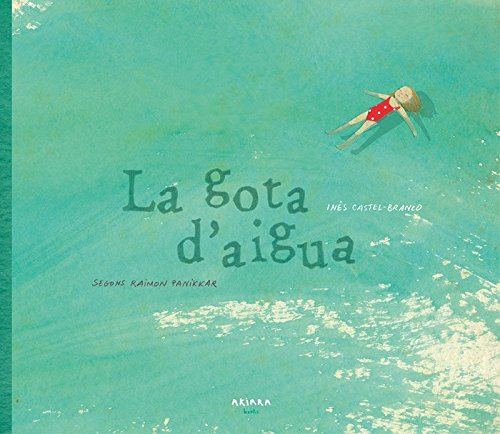
La gota d’aigua
És un conegut àlbum il·lustrat publicat per Akiara Books (2018), adaptat a partir d’un text del pensador Raimon Panikkar.
Temàtica: utilitza la metàfora de la gota d’aigua que cau al mar per explicar la mort als infants de manera natural i serena.
El missatge: quan la gota arriba a l’oceà, deixa de tenir forma de gota però no deixa de ser aigua; simplement es fon amb el tot.
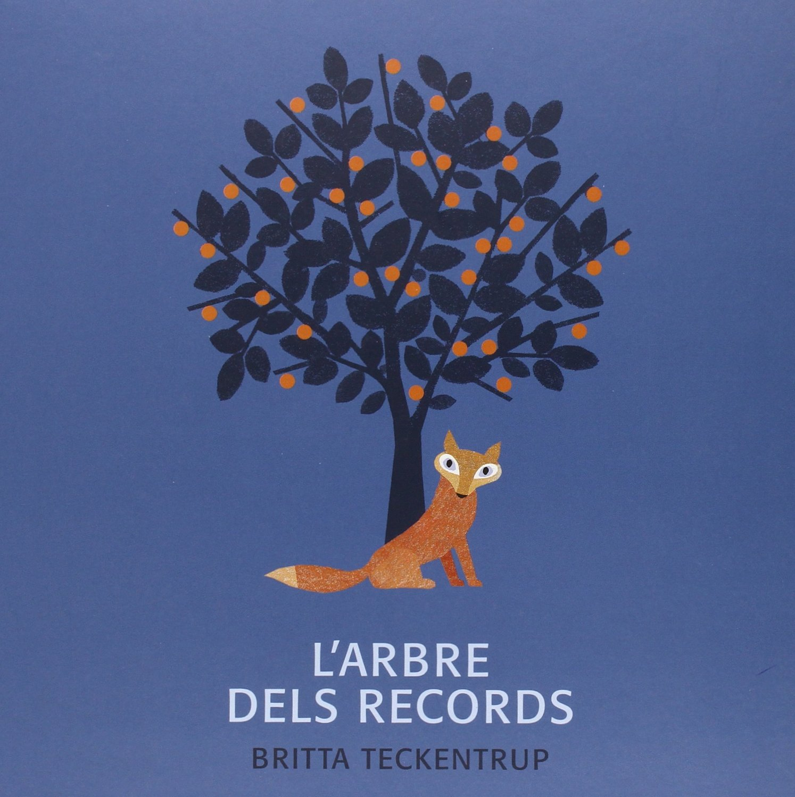
L’arbre dels records
És un àlbum il·lustrat de Britta Teckentrup que tracta la mort d’un ésser estimat i el procés de dol a través del record compartit.
Temàtica: mostra com els records poden mantenir viu el vincle amb algú que ha mort.
El missatge: les persones o éssers estimats que marxen continuen presents en allò que han deixat en nosaltres.
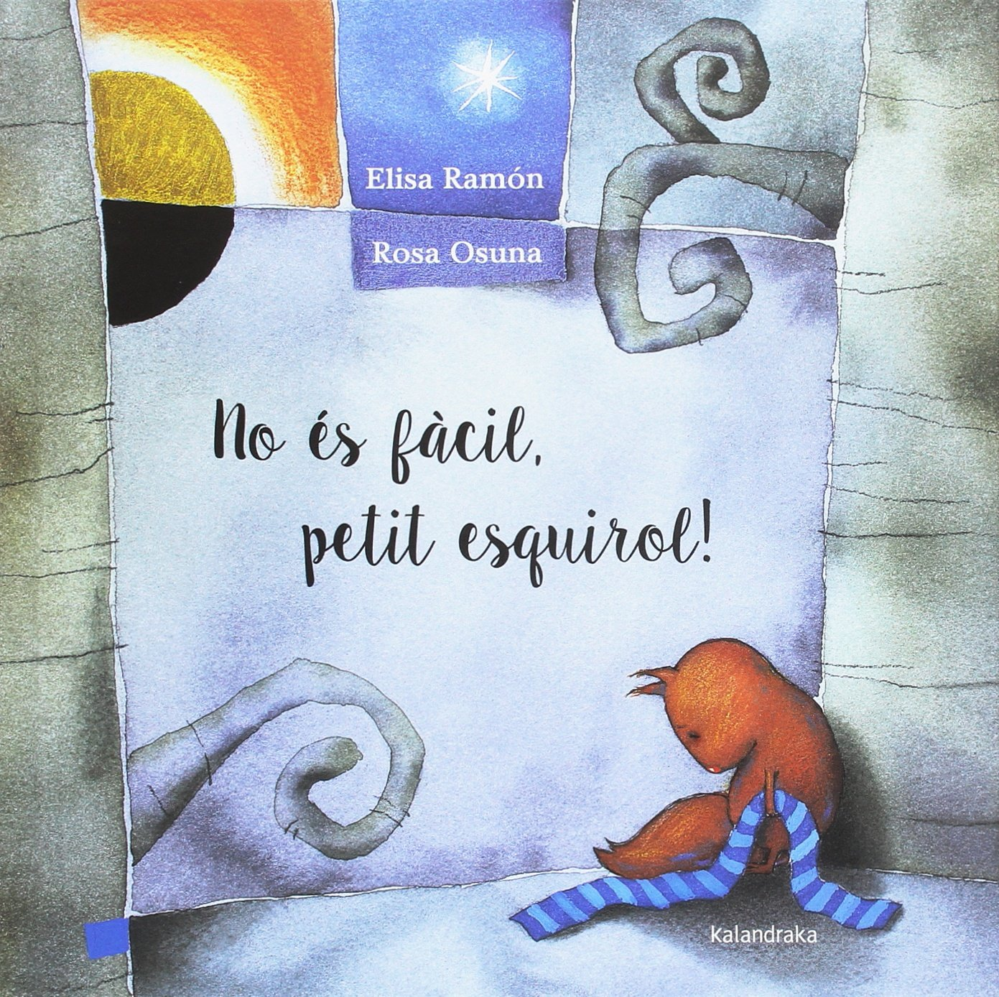
No és fàcil, petit esquirol!
És un àlbum il·lustrat que explica la història d’un petit esquirol que se sent trist després de la mort de la seva mare.
Temàtica: tracta la pèrdua d’una persona estimada i les emocions que poden aparèixer durant el dol, com la tristesa, l’enyorança o la necessitat d’acompanyament.
El missatge: perdre algú que estimem no és fàcil, però parlar-ne, sentir-nos acompanyats i recordar els moments viscuts pot ajudar-nos a conviure amb l’absència.
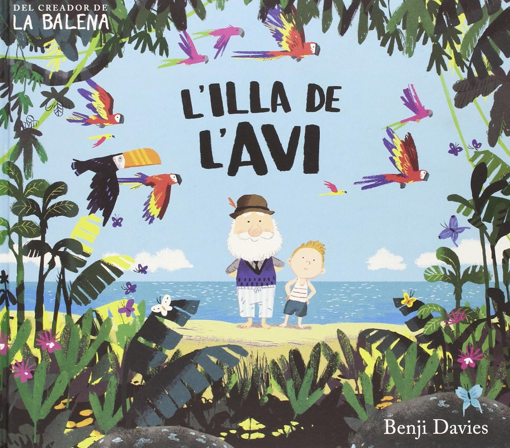
L’illa de l’avi
És un àlbum il·lustrat de Benji Davies que explica la relació entre un infant i el seu avi a través d’un viatge simbòlic, tendre i ple d’imaginació.
Temàtica: aborda la pèrdua d’un avi d’una manera poètica, visual i delicada, fent servir el viatge com a metàfora del comiat.
El missatge: les persones que estimem poden marxar físicament, però continuen presents en els records, en l’amor compartit i en tot allò que hem viscut amb elles.
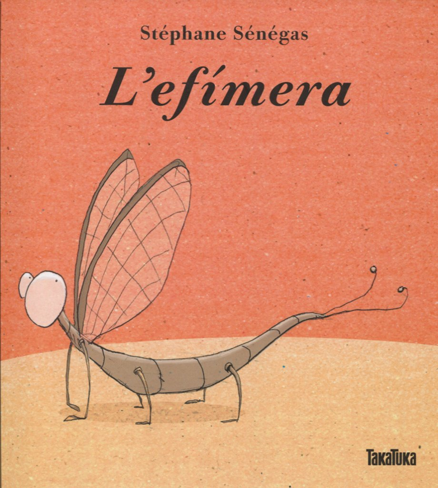
L’efímera
És un àlbum il·lustrat que explica la història de dos infants que troben un petit insecte que només viu un dia i decideixen fer que aquell dia sigui especial.
Temàtica: permet parlar de la brevetat de la vida, del pas del temps i de la mort des d’una situació senzilla, propera i fàcil d’entendre.
El missatge: encara que una vida sigui curta, pot estar plena de moments bonics, experiències importants i records valuosos.
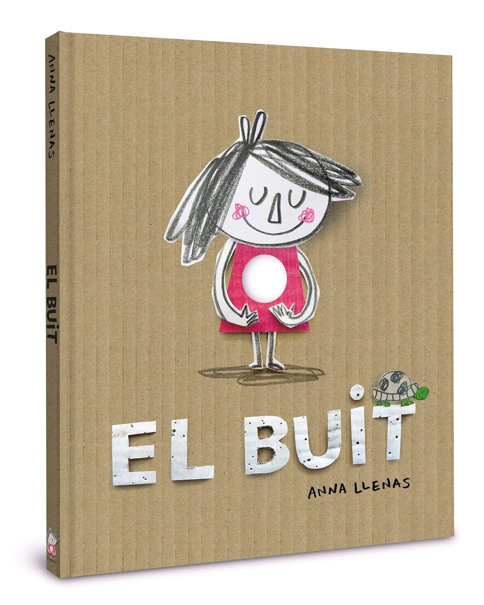
El buit
És un àlbum il·lustrat d’Anna Llenas que representa la pèrdua a través de la imatge d’un buit interior que la protagonista intenta omplir.
Temàtica: parla de la sensació de buit, la tristesa i la necessitat d’entendre què passa dins nostre quan vivim una pèrdua o una experiència dolorosa.
El missatge: no sempre podem fer desaparèixer el dolor ràpidament, però podem aprendre a escoltar-lo, cuidar-nos i trobar maneres de conviure amb allò que sentim.
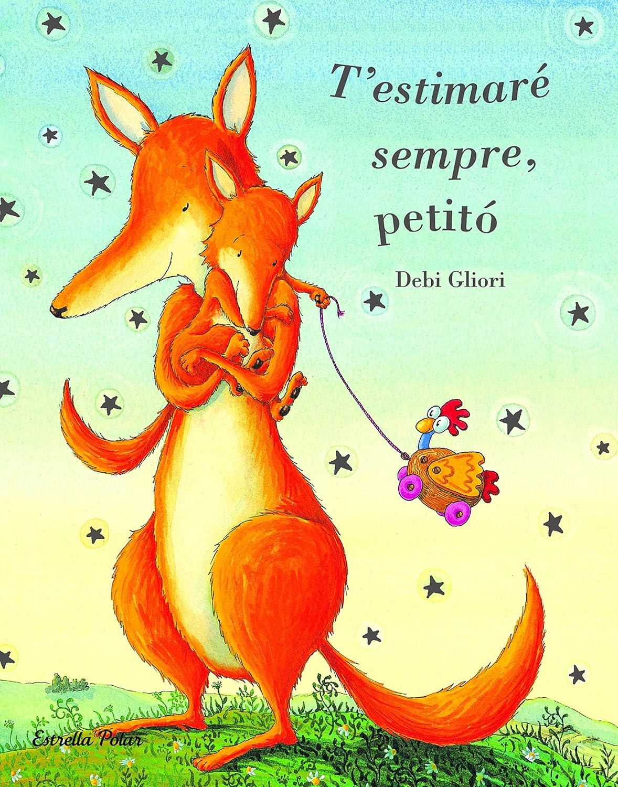
Sempre t’estimaré, petitó
És un àlbum il·lustrat que parla de l’amor incondicional a través d’una història tendra i propera entre un infant i la seva figura d’aferrament.
Temàtica: permet treballar la seguretat emocional, la por a perdre l’estima i la necessitat de sentir-se acompanyat i estimat.
El missatge: l’amor de les persones que ens estimen pot continuar present fins i tot quan tenim por, ens equivoquem o ens sentim insegurs.
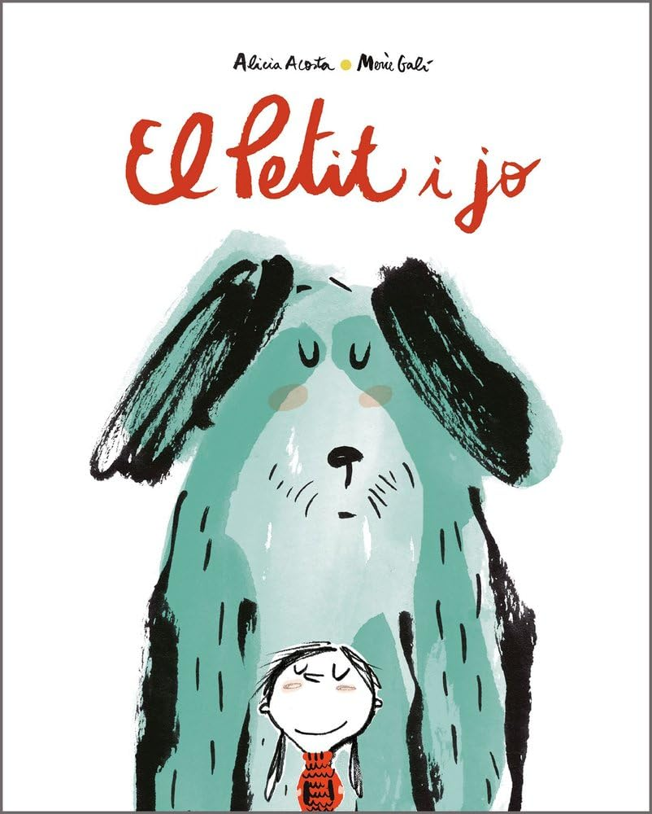
El petit i jo
És un àlbum il·lustrat que tracta la pèrdua d’un animal de companyia i el vincle afectiu que es crea entre un infant i la seva mascota.
Temàtica: parla de la mort d’un animal estimat, de la tristesa que pot aparèixer davant aquesta absència i de la importància de validar el dol dels infants.
El missatge: perdre una mascota també pot fer molt mal, però recordar els moments compartits i parlar del que sentim pot ajudar a conviure amb aquesta pèrdua.
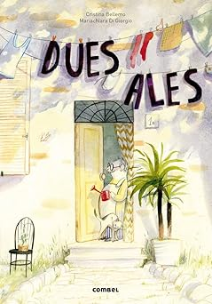
Dues ales
És un àlbum il·lustrat que aborda l’absència i el record a partir d’una història poètica i delicada, plena de simbolisme.
Temàtica: permet parlar de la mort, del pas del temps i dels records que queden quan una persona estimada ja no hi és físicament.
El missatge: quan algú marxa, el seu record pot continuar present en les petites coses, en allò que hem compartit i en l’estima que queda.
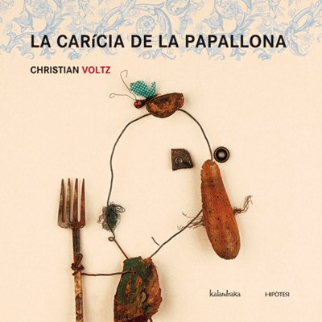
La carícia de la papallona
És un àlbum il·lustrat que permet parlar de la mort d’una persona estimada a través d’una mirada tendra, simbòlica i propera.
Temàtica: aborda la pèrdua, el record i la presència simbòlica de les persones que estimem en les petites coses quotidianes.
El missatge: encara que una persona ja no hi sigui físicament, pot continuar present en els records, en els gestos i en allò que ens fa sentir acompanyats.
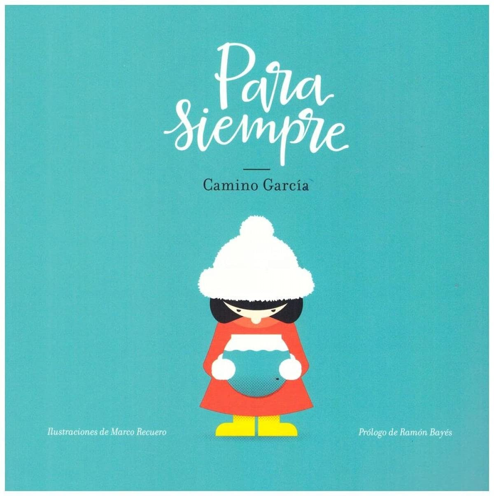
Para siempre
És un àlbum il·lustrat que ajuda a parlar de la mort amb els infants d’una manera clara, propera i respectuosa, evitant explicacions massa abstractes.
Temàtica: explica la mort com una part del cicle de la vida i permet abordar les preguntes que poden aparèixer quan algú estimat mor.
El missatge: morir vol dir que el cos deixa de viure, però l’amor, els records i tot allò que hem compartit amb aquella persona poden continuar presents.
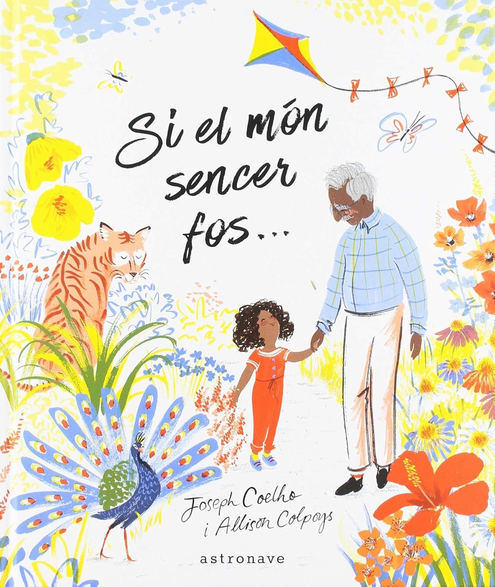
Si el món sencer fos...
És un àlbum il·lustrat que parla del vincle entre una nena i el seu avi, i de com els records poden continuar presents després de la pèrdua.
Temàtica: aborda la mort d’un ésser estimat a través de la memòria, la imaginació i els petits moments compartits.
El missatge: quan algú que estimem mor, podem continuar recordant-lo a través de les paraules, els gestos, les històries i tot allò que vam viure plegats.
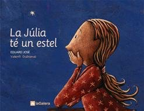
La Júlia té un estel
És un àlbum il·lustrat que explica la història d’una nena que viu la pèrdua d’una persona estimada i troba una manera simbòlica de continuar sentint-la a prop.
Temàtica: tracta la mort, l’absència i el record a través d’una imatge propera i poètica, com és la presència d’un estel.
El missatge: quan una persona estimada mor, podem continuar recordant-la i sentint-la present d’una altra manera, a través dels records, l’amor i els símbols que ens ajuden a parlar-ne.
Racons de conversa
Són propostes per crear espais tranquils de diàleg amb els infants, on puguin parlar del record, l’absència, les emocions i l’acompanyament.
El racó dels records
Aquest racó permet parlar de persones, animals o moments que els infants recorden amb afecte.
Es pot preparar una capsa amb fotografies, dibuixos, objectes simbòlics o targetes amb cors. Els infants poden portar o dibuixar alguna cosa que els recordi una persona, un animal o un moment especial.
- Què recordes d’aquesta persona, animal o moment?
- Com et fa sentir aquest record?
- Què podem fer quan trobem a faltar algú?
El racó de les emocions
Aquest espai ajuda els infants a posar nom a les emocions que poden aparèixer davant una pèrdua, com la tristesa, la ràbia, la por, la calma o l’amor.
Es poden utilitzar targetes d’emocions, cares dibuixades, pots de colors o contes com a suport visual perquè cada infant pugui expressar com se sent.
- Com creus que se sent aquest personatge?
- Què t’ajuda quan estàs trist/a?
- Què podem fer si un amic o amiga està trist/a?
La capsa dels records
Aquesta proposta consisteix a crear una capsa decorada on els infants puguin guardar dibuixos, paraules, fotografies o petits records significatius.
No cal que sempre estigui relacionada amb una mort; també pot recollir records bonics d’un familiar, d’un animal, d’un amic o d’un moment especial.
- Quin record vols guardar?
- Per què és important per a tu?
- Com et sents quan penses en aquest record?
El racó del conte compartit
Aquest racó parteix de la lectura d’un àlbum il·lustrat per obrir una conversa guiada sobre la mort, el dol, el record o l’absència.
Després de llegir un conte com La gota d’aigua, L’arbre dels records o No és fàcil, petit esquirol!, el docent pot deixar temps perquè els infants expliquin què han entès i què han sentit.
- Què li passa al personatge?
- Com creus que se sent?
- Què faries tu per ajudar aquest personatge?
El jardí dels records
Aquesta proposta permet representar els records de manera visual i col·lectiva.
Cada infant pot crear una flor o una fulla amb un dibuix, una paraula o un color relacionat amb un record bonic. Després, totes les creacions es poden enganxar en un mural col·lectiu anomenat “El jardí dels records”.
- Quin record vols posar al jardí?
- De quin color seria aquest record?
- Què podem fer perquè els records no desapareguin?
Dibuixos i activitats creatives
Són propostes plàstiques i simbòliques perquè els infants puguin expressar emocions, records i vivències relacionades amb la pèrdua d’una manera visual, calmada i respectuosa.
El dibuix del record
L’infant pot fer un dibuix d’un moment bonic, d’una persona, d’un animal o d’un lloc que recorda amb estima.
Aquesta activitat permet expressar allò que potser encara costa posar en paraules.
- Material: fulls, colors, retoladors o ceres.
- Proposta: “Dibuixa un record que et faci sentir bé”.
- Després es pot compartir oralment, només si l’infant ho vol.
La capsa dels records
Es pot decorar una capsa col·lectiva o individual on guardar dibuixos, paraules, fotografies o petits objectes simbòlics.
La capsa pot convertir-se en un espai segur on conservar records importants.
- Material: capsa, cartolines, gomets, colors i papers petits.
- Proposta: guardar-hi records bonics o paraules significatives.
- Es pot deixar en un racó tranquil de l’aula.
El mural dels records bonics
Els infants poden crear un mural col·lectiu amb dibuixos, paraules, cors, flors o estrelles relacionades amb records importants.
Aquesta proposta ajuda a representar que els records poden continuar presents dins del grup.
- Material: paper gran, cartolines, colors, adhesius i tisores.
- Proposta: crear entre tots un mural de records.
- Pot quedar penjat a l’aula durant uns dies.
La flor del record
Cada infant pot crear una flor de paper. Al centre hi pot dibuixar o escriure, amb ajuda, un record, una emoció o una paraula bonica.
Després es poden ajuntar totes les flors per crear un petit jardí simbòlic.
- Material: cartolines, colors, tisores i cola.
- Proposta: “Quin record vols posar dins la teva flor?”
- Permet treballar el record d’una manera visual i positiva.
L’estel de les emocions
Els infants poden crear un estel amb una emoció o un missatge. Pot representar una persona, un animal o un record que volen tenir present.
Aquesta activitat és útil per parlar de l’absència a través d’un símbol proper i poètic.
- Material: cartolina, fils, colors i gomets.
- Proposta: escriure o dibuixar una emoció dins l’estel.
- Es poden penjar els estels en un espai tranquil de l’aula.
Preguntes senzilles per parlar del que sentim
Són preguntes breus, clares i adaptades a Educació Infantil per ajudar els infants a expressar emocions, dubtes, records i necessitats davant la mort, el dol o l’absència.
Preguntes sobre les emocions
Aquestes preguntes ajuden els infants a identificar com se senten i a posar paraules a les seves emocions.
- Com et sents avui?
- Quin color tindria aquesta emoció?
- On notes aquesta emoció al cos?
- Què t’ajuda quan estàs trist/a?
Preguntes sobre el record
Aquestes preguntes permeten parlar de les persones, animals o moments que els infants recorden amb estima.
- Quin record bonic tens?
- Què t’agradava fer amb aquesta persona o animal?
- Quina cosa et fa pensar-hi?
- Com podem guardar aquest record?
Preguntes sobre l’absència
Aquestes preguntes ajuden a parlar de manera senzilla sobre el fet de trobar a faltar algú.
- Què vol dir trobar a faltar algú?
- Quan trobes a faltar algú, què sents?
- Hi ha alguna cosa que et fa sentir a prop d’aquesta persona o animal?
- Què podem fer quan enyorem algú?
Preguntes després d’un conte
Aquestes preguntes poden utilitzar-se després de llegir un àlbum il·lustrat sobre la mort, el dol o el record.
- Què li ha passat al personatge?
- Com creus que se sent?
- Quina part del conte t’ha agradat més?
- Què li diries al personatge per ajudar-lo?
Preguntes per cuidar i acompanyar
Aquestes preguntes afavoreixen l’empatia i ajuden els infants a pensar com poden acompanyar algú que està trist.
- Com podem ajudar algú que està trist?
- Què li podem dir a un amic o amiga que plora?
- Què ens agrada que facin amb nosaltres quan estem tristos?
- Una abraçada pot ajudar? Quan?
Recursos de Primària
Apartats per treballar la mort i el dol amb infants d’Educació Primària.
Lectures i propostes de debat
Són lectures pensades per obrir converses més profundes amb l’alumnat de Primària sobre la mort, el dol, els records, l’absència i la manera d’acompanyar les persones que passen per una pèrdua.
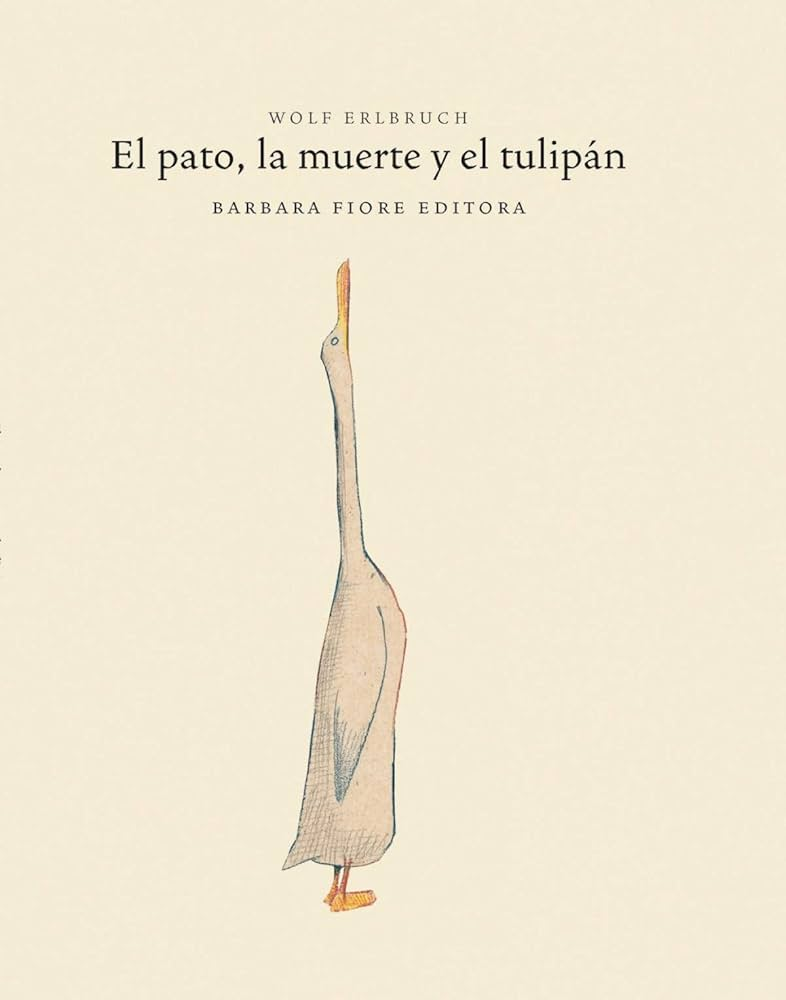
El pato y la muerte y el tulipán
És un àlbum il·lustrat que presenta la mort com una figura propera i tranquil·la. La relació entre l’ànec i la mort permet parlar d’aquest tema d’una manera serena, simbòlica i respectuosa.
Proposta de debat: parlar sobre com apareix representada la mort i sobre per què pot fer-nos por allò que no coneixem.
- Com és la mort en aquest conte?
- Per què creus que l’ànec primer se sorprèn?
- La mort sempre s’ha de representar com una cosa fosca o terrorífica?
- Què ens fa pensar aquest conte?
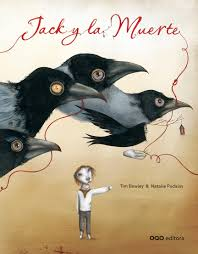
Jack y la muerte
És una història que explica com Jack aconsegueix atrapar la mort i, a partir d’aquest fet, descobreix les conseqüències que tindria un món on ningú pogués morir. El relat permet parlar de la mort des d’una perspectiva simbòlica, narrativa i reflexiva.
Proposta de debat: reflexionar sobre per què la mort forma part del cicle de la vida i sobre què passaria si aquesta desaparegués completament.
- Per què Jack vol evitar la mort?
- Què passa quan la mort queda atrapada?
- Per què la mort també forma part de la vida?
- Què ens ensenya aquesta història sobre acceptar els comiats?
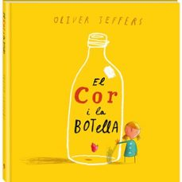
El cor i la botella
Aquest àlbum permet parlar de què passa quan una persona viu una pèrdua i decideix protegir-se per no patir. És especialment útil per reflexionar sobre el bloqueig emocional i la dificultat de tornar a expressar allò que sentim.
Proposta de debat: conversar sobre què fem amb les emocions quan ens fan mal i sobre la importància de no tancar-nos del tot.
- Per què la protagonista guarda el cor dins d’una botella?
- Què passa quan intentem no sentir res?
- Què ens pot ajudar a tornar a obrir el cor?
- Amb qui podem parlar quan ens sentim així?
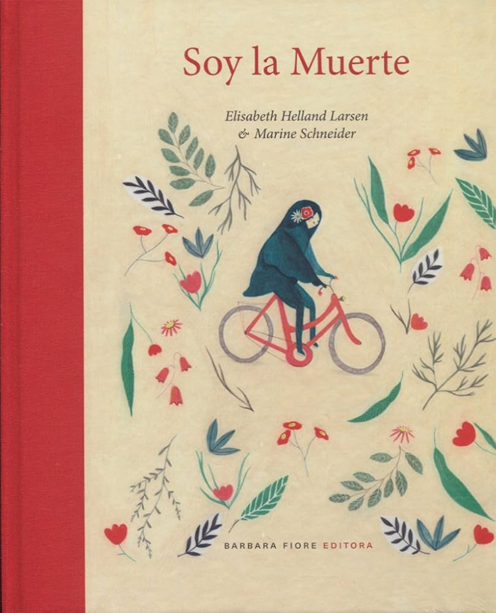
Soy la muerte
És una lectura que presenta la mort com una part natural de la vida, amb un llenguatge poètic però clar. Pot ajudar l’alumnat a fer-se preguntes i a parlar de la mort sense convertir-la en un tabú.
Proposta de debat: reflexionar sobre la relació entre la vida i la mort i sobre com podem parlar-ne amb respecte i naturalitat.
- Per què creus que sovint costa parlar de la mort?
- Què vol dir que la mort forma part de la vida?
- Quines preguntes ens fem sobre aquest tema?
- Com podem parlar-ne sense fer mal als altres?
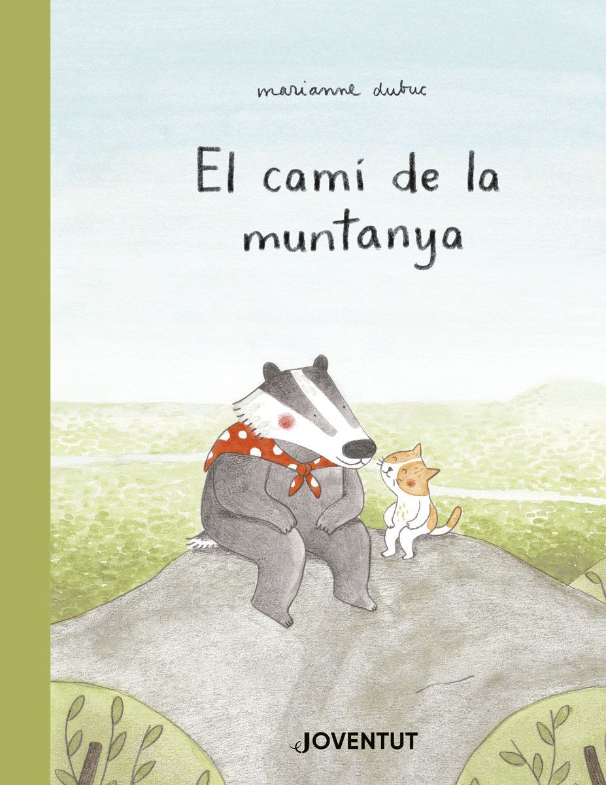
El camí de la muntanya
Aquesta lectura permet parlar del pas del temps, de la relació entre generacions i dels aprenentatges que ens deixen les persones grans. És una proposta adequada per abordar el comiat des d’una mirada tendra i simbòlica.
Proposta de debat: parlar sobre què aprenem de les persones que estimem i sobre com podem conservar allò que ens han ensenyat.
- Què aprèn el personatge durant el camí?
- Quines coses ens poden ensenyar les persones grans?
- Què queda de les persones quan ja no hi són?
- Com podem continuar compartint el que hem après d’elles?
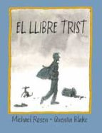
El llibre trist
És una lectura adequada per a Primària perquè permet parlar de la tristesa, del dol i de la dificultat d’expressar allò que sentim quan hem perdut algú important.
Proposta de debat: conversar sobre com es manifesta la tristesa, per què no totes les persones viuen el dol de la mateixa manera i quines coses poden ajudar-nos quan estem passant per un moment difícil.
- Com es nota que una persona està trista?
- Tothom expressa la tristesa igual?
- Què ens pot ajudar quan ens sentim malament?
- Com podem acompanyar algú que està vivint una pèrdua?
Dinàmiques d’aula
Són propostes pensades per treballar el dol, el record i l’acompanyament de manera vivencial, respectuosa i adaptada a l’alumnat de Primària. Es poden fer a partir de situacions fictícies, contes o personatges inventats per evitar exposar experiències personals de l’alumnat.
La maleta dels records
Es presenta una maleta o capsa amb diferents objectes simbòlics: una fotografia, una carta, una pedra, una clau, una flor seca, una entrada o una peça de roba. Cada objecte representa una manera de recordar algú, un moment o una etapa important.
L’alumnat pot escollir un objecte i explicar quin record podria guardar. No cal que sigui una experiència personal real; també es pot fer a partir d’un personatge d’un conte.
Adaptació per cursos més elevats: es pot convertir en un “museu dels records”, on cada grup crea una fitxa explicativa de l’objecte, el seu significat simbòlic i la relació que té amb el dol o l’absència.
- Quin objecte triaries per recordar algú?
- Què pot representar aquest objecte?
- Els records només es guarden en objectes?
Cartes que no cal enviar
L’alumnat escriu una carta a una persona, animal, moment o etapa que es troba a faltar. La carta no s’ha d’entregar a ningú, sinó que serveix per expressar allò que costa dir en veu alta.
Es poden oferir inicis de frase com: “Et recordo quan…”, “M’agradaria dir-te…”, “Gràcies per…” o “Encara penso en…”. Després, cada infant pot decidir si vol guardar-la, compartir-ne només una frase o deixar-la en una capsa simbòlica.
Adaptació per cursos més elevats: es pot proposar escriure una carta més elaborada, un text poètic o una entrada de diari fictícia des del punt de vista d’un personatge que està vivint una pèrdua.
- Hi ha coses que costa dir en veu alta?
- Escriure pot ajudar a ordenar el que sentim?
- Què voldries conservar d’aquesta carta?
El mapa de les emocions del dol
Es crea un mapa gran amb diferents territoris emocionals: tristesa, ràbia, por, calma, confusió, amor, record i esperança. L’alumnat hi situa targetes amb frases o situacions relacionades amb el dol.
Aquesta dinàmica ajuda a entendre que el dol no és només tristesa, sinó que pot incloure emocions diverses i fins i tot contradictòries.
Adaptació per cursos més elevats: es poden afegir emocions més complexes, com culpa, alleujament, enyorança, frustració o incertesa, i analitzar casos ficticis per veure com pot sentir-se cada personatge.
- Quines emocions poden aparèixer quan algú viu una pèrdua?
- Es pot estar trist i tranquil alhora?
- Com podem respectar el que sent cada persona?
El banc de les paraules que acompanyen
En petits grups, l’alumnat pensa frases que poden ajudar una persona que està trista i frases que, encara que es diguin amb bona intenció, poden no ajudar tant.
Després es classifiquen en dues columnes: “Paraules que acompanyen” i “Paraules que poden fer mal”. Finalment, es pot crear un petit banc de frases respectuoses per tenir a l’aula.
Adaptació per cursos més elevats es poden representar petites situacions de rol i analitzar quines respostes són més empàtiques, quines pressionen massa i quines respecten el silenci de l’altra persona.
- Quines paraules ens poden ajudar quan estem tristos?
- És millor donar consells o escoltar?
- Com podem acompanyar sense pressionar?
El ritual simbòlic del comiat
Després de llegir un conte o treballar una situació fictícia, l’alumnat escriu o dibuixa una paraula relacionada amb allò que voldria conservar: amor, record, gràcies, abraçada, llum o companyia.
Totes les paraules es poden col·locar en un mural, una capsa o un camí de paper. La idea és entendre que acomiadar-se no vol dir oblidar, sinó cuidar el record d’una altra manera.
Adaptació per cursos més elevats: es pot fer una reflexió escrita final sobre la diferència entre acomiadar-se i oblidar, o bé crear un petit protocol d’aula sobre com acompanyar algú que viu una pèrdua.
- Quina paraula voldries conservar?
- Què ens ajuda a acomiadar-nos?
- Acomiadar-se vol dir oblidar?
Activitats d’escriptura i expressió
Són propostes perquè l’alumnat pugui expressar idees, records, emocions i preguntes relacionades amb la mort i el dol a través de l’escriptura, la paraula, la creació artística i la reflexió personal.
El diari d’un personatge
Després de llegir un conte o treballar una situació fictícia, l’alumnat escriu una entrada de diari des del punt de vista d’un personatge que està vivint una pèrdua.
Aquesta proposta permet posar-se en el lloc de l’altre i expressar emocions sense haver d’exposar experiències personals pròpies.
Adaptació per a cursos més elevats: es pot demanar que el text inclogui una evolució emocional: com se sentia el personatge al principi, què l’ha ajudat i com se sent després d’un temps.
- Com se sent el personatge?
- Què li agradaria dir però no sap com expressar?
- Què necessita per sentir-se acompanyat?
Poemes del record
L’alumnat crea un poema breu sobre el record, l’absència, l’estima o el comiat. Es poden oferir estructures senzilles per començar, com “Recordo…”, “Trobo a faltar…”, “Guardo…” o “Gràcies per…”.
No cal que el poema parli d’una mort real; pot estar inspirat en un conte, una imatge, un personatge o una situació inventada.
Adaptació per a cursos més elevats: es pot treballar amb metàfores, comparacions i imatges poètiques per expressar emocions de manera més elaborada.
- Quina paraula representa millor aquest record?
- Si aquesta emoció fos un paisatge, com seria?
- Quina imatge podria representar l’absència?
La carta d’acompanyament
L’alumnat escriu una carta dirigida a un personatge fictici que està trist o que ha perdut algú. L’objectiu és pensar com podem acompanyar una persona sense pressionar-la ni donar-li respostes massa simples.
Aquesta activitat ajuda a treballar l’empatia, el respecte i el valor de les paraules quan algú està passant per un moment difícil.
Adaptació per a cursos més elevats: es pot revisar la carta per detectar frases que acompanyen i frases que podrien no ajudar, millorant el text amb un llenguatge més sensible.
- Què li podries dir a algú que està trist?
- Quines frases poden acompanyar sense fer mal?
- Com podem mostrar que estem disponibles?
El pot de les paraules importants
Cada alumne escriu en petits papers paraules relacionades amb el dol, el record i l’acompanyament: estima, absència, calma, tristesa, ajuda, memòria, comiat o esperança.
Després, es poden llegir algunes paraules i crear frases, petits textos o reflexions a partir d’elles.
Adaptació per a cursos més elevats: es pot convertir en una activitat d’escriptura reflexiva, demanant que cada alumne triï tres paraules i escrigui un text breu que les relacioni.
- Quina paraula et sembla més important?
- Hi ha paraules que poden fer sentir millor?
- Quines paraules necessitem quan vivim una pèrdua?
Una escena per continuar
Es presenta una escena breu: un personatge troba a faltar algú, veu un objecte que li porta records o no sap com parlar del que sent. L’alumnat ha de continuar la història.
Aquesta proposta permet treballar la narrativa, les emocions i la resolució simbòlica d’una situació difícil.
Adaptació per a cursos més elevats: es pot demanar que la història inclogui diàlegs realistes, un conflicte emocional i una resolució respectuosa, sense finals forçadament feliços.
- Què podria passar després?
- Qui podria ajudar el personatge?
- Com pot acabar la història sense oblidar el que ha passat?
Recursos per parlar del dol amb respecte
Són orientacions i recursos per ajudar el docent a abordar la mort i el dol a l’aula de manera clara, sensible i respectuosa, evitant frases confuses o respostes que puguin invalidar les emocions de l’alumnat.
Parlar amb paraules clares
Quan es parla de la mort amb infants, és important utilitzar un llenguatge clar, senzill i adaptat a l’edat. Algunes expressions com “ha marxat”, “s’ha adormit” o “està en un lloc millor” poden generar confusió o pors.
Es pot explicar que morir vol dir que el cos deixa de funcionar i que la persona o l’animal ja no pot menjar, respirar, parlar o sentir dolor.
- Evitar metàfores que puguin confondre.
- Respondre només allò que l’infant pregunta.
- Fer servir frases breus i comprensibles.
Validar totes les emocions
Davant d’una pèrdua, l’alumnat pot sentir tristesa, ràbia, por, culpa, confusió o fins i tot calma. No hi ha una única manera correcta de viure el dol.
El docent pot ajudar validant el que senten, sense obligar-los a parlar ni intentar canviar ràpidament l’emoció.
- “És normal que et sentis així.”
- “Pots estar trist/a i també recordar moments bonics.”
- “No cal que parlis ara si no vols.”
Acompanyar sense forçar
Quan un infant està vivint una pèrdua, pot necessitar parlar, però també pot necessitar silenci, rutina, joc o espais tranquils. Acompanyar no sempre vol dir preguntar constantment.
És important oferir disponibilitat i seguretat, respectant el ritme de cada infant i evitant exposar-lo davant del grup si no ho vol.
- Oferir un espai tranquil si ho necessita.
- No obligar a compartir experiències personals.
- Respectar els silencis i els temps de cadascú.
Frases que poden ajudar
Algunes frases poden transmetre presència, respecte i disponibilitat. No cal donar solucions immediates; sovint el més important és que l’infant senti que no està sol.
Aquestes frases poden servir al docent o a l’alumnat per aprendre a acompanyar millor els altres.
- “Estic aquí amb tu.”
- “Vols que t’escolti?”
- “Em sap greu que estiguis passant per això.”
- “Podem parlar-ne quan tu vulguis.”
Frases que és millor evitar
Hi ha frases que es diuen amb bona intenció, però que poden fer que l’infant senti que la seva emoció no és important o que hauria de deixar d’estar trist ràpidament.
En lloc de treure importància al dolor, és millor reconèixer-lo i oferir companyia.
- “No ploris.”
- “Has de ser fort/a.”
- “No passa res.”
- “Ja se’t passarà.”
Cuidar el grup classe
Quan una pèrdua afecta un infant o el grup, és important cuidar el clima de l’aula. Es poden generar espais de conversa, però sempre des del respecte, la confidencialitat i la no obligació de parlar.
També es poden pactar petites normes de cura per escoltar millor i evitar comentaris que puguin fer mal.
- Escoltar sense interrompre.
- No riure’s de les emocions dels altres.
- No explicar fora de l’aula allò que algú comparteix.
- Respectar qui no vol parlar.
Parlar de la mort també és educar per a la vida
Visibilitzar el dol a l’escola pot ajudar els infants a posar paraules a allò que senten i a comprendre millor les experiències de pèrdua.